BPD Capture: a field photo app for Blueprint Digital
I designed and shipped an offline Android app that lets site teams photograph and file every job by its CE number, then send a finished field report from the van. I directed the product and design; Claude, an AI coding assistant, wrote and tested the code with me. This page walks through how the work actually went, including the parts that didn't work the first time.
Capture, file and report, without a server
Blueprint Digital's jobs are tracked by CE number. On site, photos ended up mixed in personal camera rolls and had to be sorted by hand later. The app needed to:
- keep every photo and video in a folder for its CE number, on the phone;
- work with no signal, because sites often have none;
- produce a field report PDF and send it to the dispatcher in a couple of taps;
- run without a backend or app store account, so it costs nothing to operate.
I set the direction, Claude built and tested, I judged the result
Every feature went through the same loop. I described what I wanted in plain language, often with reference screenshots from other apps. Claude wrote the code, installed the build on an Android emulator and took its own screenshots to check the result. I reviewed what it showed me and pushed back until it was right.
Decisions were written down as they were made, so they stayed consistent between sessions: a design system document (colours, type, components, a changelog row for every visual change), a security document with rules both apps follow, and a short instruction file that tells Claude to keep both up to date.
The working app
Version one covered the whole job: a dashboard of jobs in progress, capture straight into each job's folder, due dates with a calendar, insights on overdue work, PDF field reports, a daily digest and full backup and restore. I picked a dark theme with a cyan-to-purple gradient from a set of reference screenshots, and tested it on my own phone.
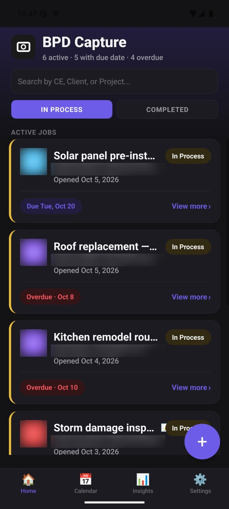
Seven 3D concepts, two rejections, one logo drawn by its own pencil
I wanted the app to open with something that felt like Blueprint Digital, not a generic loading spinner. Claude built the concepts as live three.js scenes in one gallery so I could compare them side by side and rotate them, rather than judging still images.
That's such a boring loading screen and it is so cliché, as many people use that exact one.My feedback on the first 3D attempt, a spinning torus knot
You have combined two designs in one animation, which does not look good.My feedback on a blend of the "camera iris" and "blueprint" concepts
The answer was to use the real logo. Claude extracted the exact vector paths and gradient colours from the logo's PDF (not the outline-only cut file), and I chose concept 7: the pencil in the logo traces the outline, the colours pour in, the bulb lights up and the pencil slides into place. The last frame had to match the printed logo exactly, and it does.
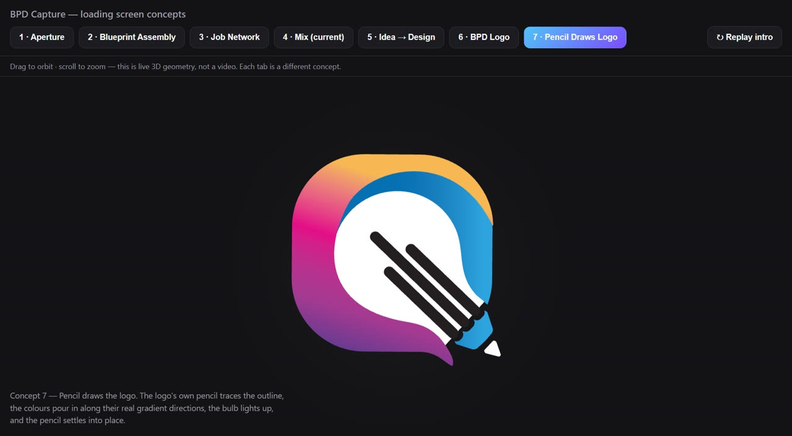
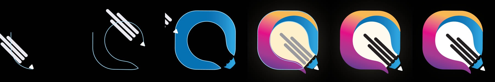
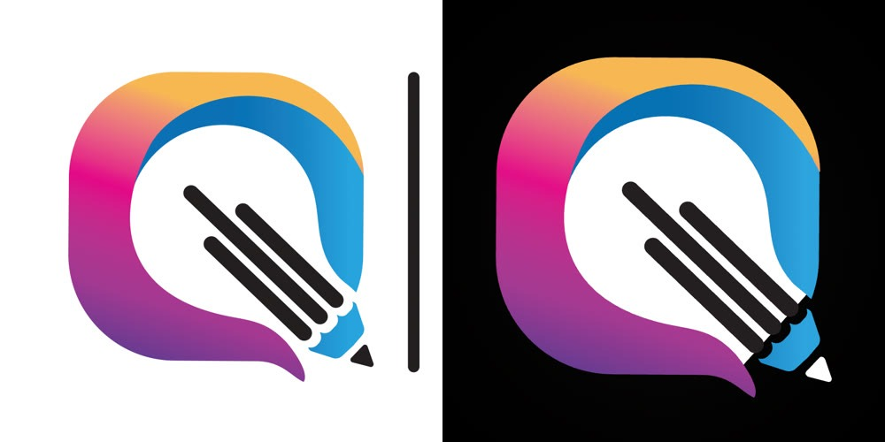
One source for every logo
The app icon, the in-app logo and the desktop icon are all rendered from the animation's final frame, so they can never drift apart. Testing on the emulator caught one problem: Android crops icons to a circle, and the first version clipped the pencil tip. The logo now sits at 45% of the icon canvas instead of 58%.
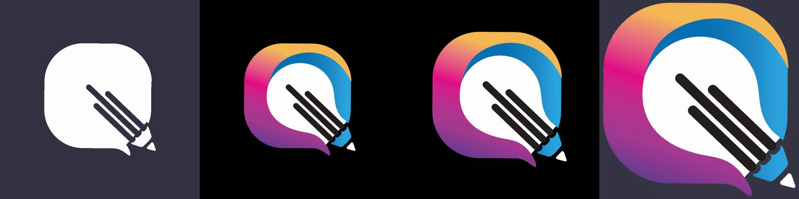
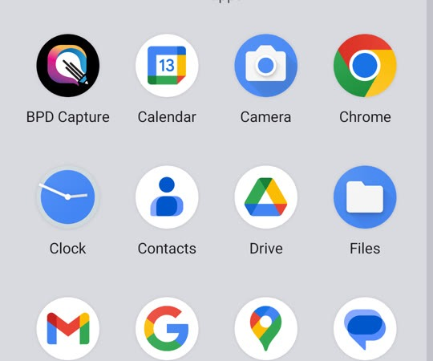
Updates in one tap
The app is installed directly from an APK file, so it checks GitHub Releases for new versions itself. The first version of the updater asked people to save a backup zip before updating, and I found that confusing on my own phone. Now the backup is saved quietly on the device, the update downloads, and Android asks for the one confirmation it always requires. Claude tested the full path on the emulator, from an older build through to the installed new version.
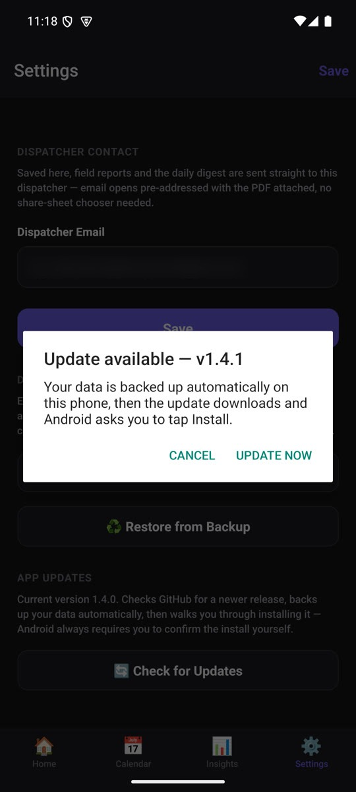
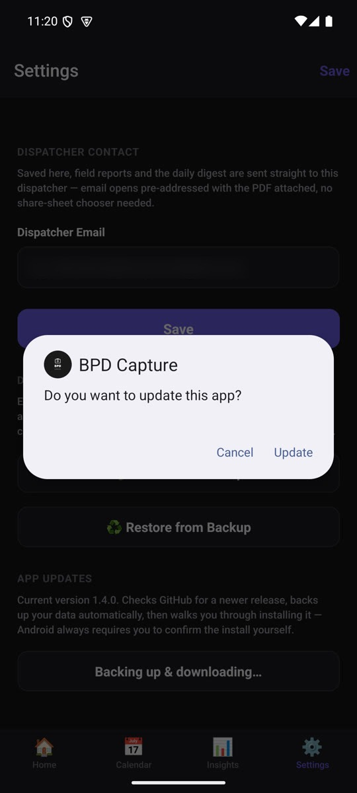
The same jobs on a Windows PC
A Windows version, built with Electron, mirrors the phone app's screens and data model for office work: reviewing jobs, adding photos from files or a webcam, and the same startup animation. Syncing data between the two through GitHub is planned next.
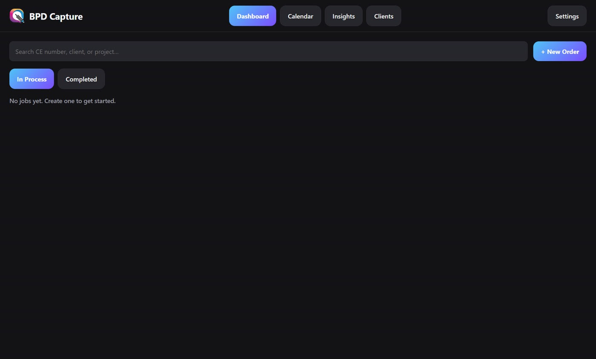
Testing it the way an attacker would
Before going further I asked for a security check of both apps. Claude reviewed the code, then ran ten real attack attempts inside the desktop app (reading system files, escaping the data folder, deleting files outside it, navigating to a website). All ten are now blocked, and normal use still works.
| Finding | Severity | Outcome |
|---|---|---|
A job number like .. could point outside the jobs folder; deleting that job would have wiped every job's photos | High | Fixed in both apps with shared validation |
| Desktop accepted any file path from its own screens | High | Fixed: files outside the app's data folder are refused |
| Desktop window could be navigated to a website | Medium | Fixed: navigation and pop-ups blocked |
| Release builds signed with a publicly known key | Critical | Planned: a private signing key with a one-time reinstall |
SQL injection was already ruled out, because every query passes typed text as data. An automatic check now fails the build if anyone ever writes a query that pastes text in.
"It looks AI-generated"
People I showed the app to said it looked like it was made by AI. They were right about why: a purple gradient, emoji used as icons, and identical rounded cards are the default look of generated apps. Redesigning is taking several rounds, and each round taught me something about how I want to brief design.
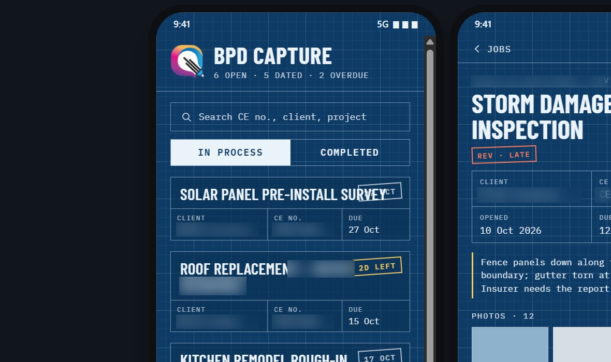
Drafting table: blueprint paper and title blocks.
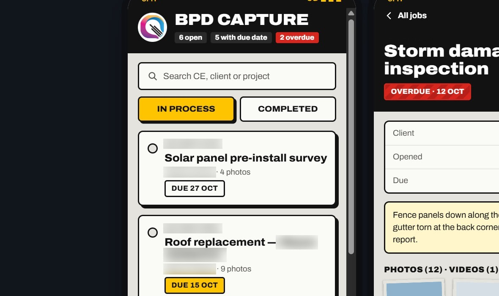
Field kit: site tags, hazard stripes, big buttons.
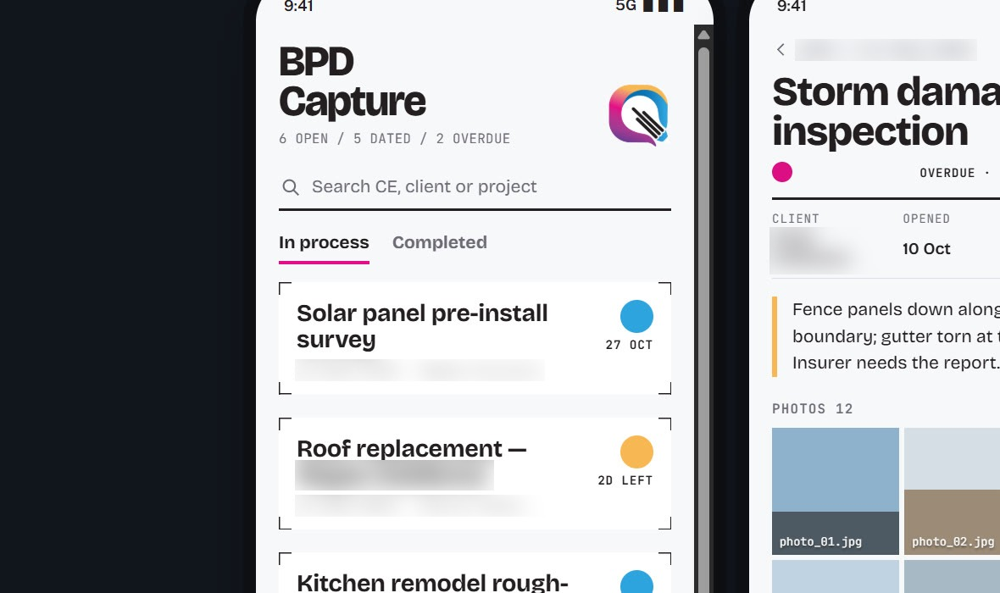
Colour proof: the logo's inks as status colours.
Round 1 took its ideas from the business: blueprints, site work, print. I liked none of them. The design didn't need to illustrate the brand, so I shared four dashboard designs I liked instead.
Round 2 recreated those references almost exactly: number tiles, charts and filter pills everywhere. It felt overwhelming, and I realised I'd wanted their style (colours, type, shapes), not their layout.
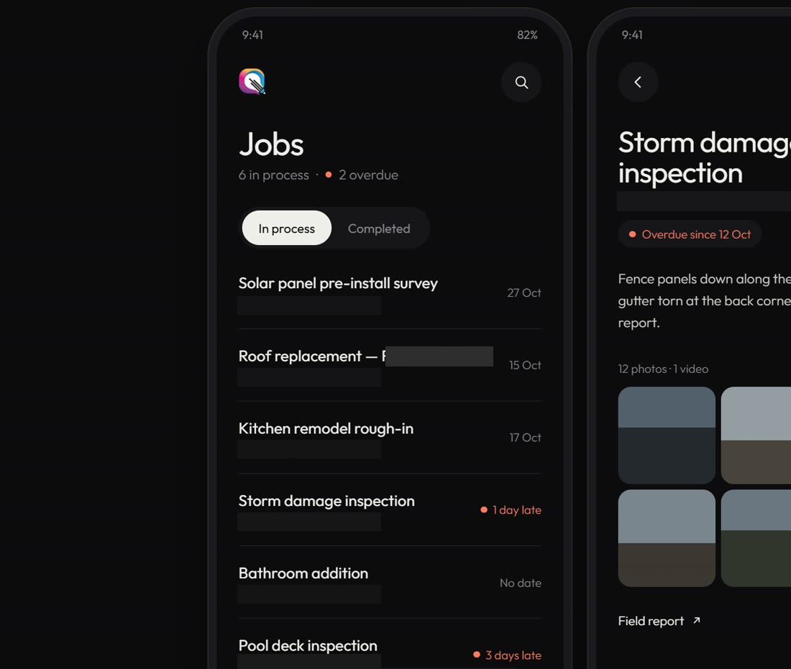
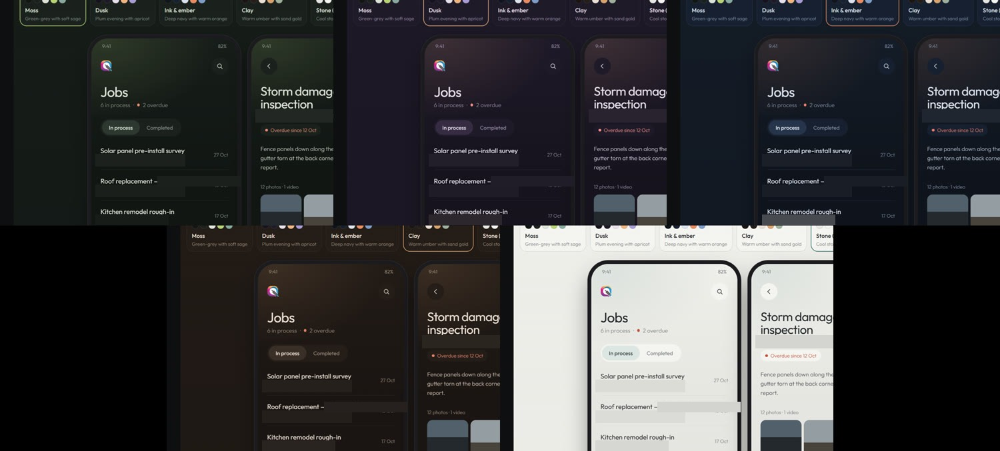
The chosen scheme will be built on a separate branch, so the working app stays untouched until the new design has been tested on the phone.
Directing AI is a design skill
- Show, then decide. Comparing live options side by side (7 animation concepts, 5 colour schemes) got to good answers faster than describing ideas in words.
- Say what a reference is for. "Use this for the colours and type, not the layout" would have saved a whole round.
- Insist on real assets. The animation only worked once it used the actual logo paths instead of an approximation.
- Test where people use it. A 3D startup crash only showed up on a real phone, never in the browser preview. After that, every build was checked on an Android emulator with screenshots, which caught the clipped icon and the confusing update flow before they reached anyone.
- Write rules down. The design system, security rules and changelog let each session pick up where the last left off.